N-D Test Functions H¶
N-D Test Functions H¶Hansen test objective function.
This class defines the Hansen global optimization problem. This is a multimodal minimization problem defined as follows:
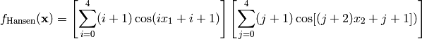
Here,  represents the number of dimensions and
represents the number of dimensions and ![x_i \in [-10, 10]](_images/math/d511ca3206c16bae3e3af3c02835f3fe9fb07286.png) for
for  .
.
Two-dimensional Hansen function
Global optimum: 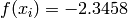 for 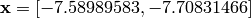.
Hartmann3 test objective function.
This class defines the Hartmann3 global optimization problem. This is a multimodal minimization problem defined as follows:
Where, in this exercise:
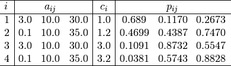
Here, represents the number of dimensions and ![x_i \in [0, 1]](_images/math/e365bfdf2ca5275ec86c322fa2fe576a37b0efd7.png) for
for  .
.
Global optimum: 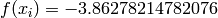 for 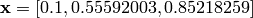
Hartmann6 test objective function.
This class defines the Hartmann6 global optimization problem. This is a multimodal minimization problem defined as follows:
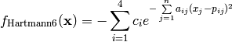
Where, in this exercise:
![\begin{array}{l|cccccc|r}
\hline
i & & & a_{ij} & & & & c_i \\
\hline
1 & 10.0 & 3.0 & 17.0 & 3.50 & 1.70 & 8.00 & 1.0 \\
2 & 0.05 & 10.0 & 17.0 & 0.10 & 8.00 & 14.00 & 1.2 \\
3 & 3.00 & 3.50 & 1.70 & 10.0 & 17.00 & 8.00 & 3.0 \\
4 & 17.00 & 8.00 & 0.05 & 10.00 & 0.10 & 14.00 & 3.2 \\
\hline
\end{array}
\newline
\\
\newline
\begin{array}{l|cccccr}
\hline
i & & & p_{ij} & & & \\
\hline
1 & 0.1312 & 0.1696 & 0.5569 & 0.0124 & 0.8283 & 0.5886 \\
2 & 0.2329 & 0.4135 & 0.8307 & 0.3736 & 0.1004 & 0.9991 \\
3 & 0.2348 & 0.1451 & 0.3522 & 0.2883 & 0.3047 & 0.6650 \\
4 & 0.4047 & 0.8828 & 0.8732 & 0.5743 & 0.1091 & 0.0381 \\
\hline
\end{array}](_images/math/a0e90bc23fdec798328c78955699bdc655732db9.png)
Here, represents the number of dimensions and for  .
.
Global optimum: 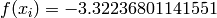 for 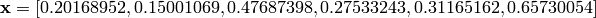
HelicalValley test objective function.
This class defines the HelicalValley global optimization problem. This is a multimodal minimization problem defined as follows:
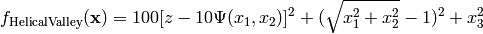
Where, in this exercise:
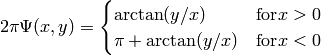
Here, represents the number of dimensions and 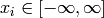 for .
Global optimum:  for 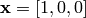
for 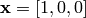
HimmelBlau test objective function.
This class defines the HimmelBlau global optimization problem. This is a multimodal minimization problem defined as follows:

Here, represents the number of dimensions and ![x_i \in [-6, 6]](_images/math/4ac04453fa34db4ac100caa22aced4c378598e65.png) for .
for .
Two-dimensional HimmelBlau function
Global optimum: for ![\mathbf{x} = [0, 0]](_images/math/ae446016118c18b04012af8feda9cc5e2e1808a6.png)
HolderTable test objective function.
This class defines the HolderTable global optimization problem. This is a multimodal minimization problem defined as follows:
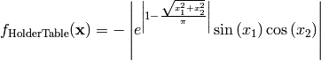
Here, represents the number of dimensions and for .
Two-dimensional HolderTable function
Global optimum: 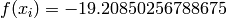 for 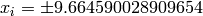 for
Holzman test objective function.
This class defines the Holzman global optimization problem. This is a multimodal minimization problem defined as follows:
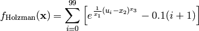
Where, in this exercise:
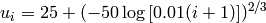
Here, represents the number of dimensions and 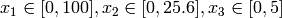.
Global optimum: for ![\mathbf{x} = [50, 25, 1.5]](_images/math/213fecbadfdaff832486b641e83587ac11937340.png)
Hosaki test objective function.
This class defines the Hosaki global optimization problem. This is a multimodal minimization problem defined as follows:
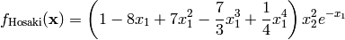
Here, represents the number of dimensions and ![x_i \in [0, 10]](_images/math/04492218e68759ff19d07231a62fe3a092015dfc.png) for .
for .
Two-dimensional Hosaki function
Global optimum: for 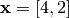.